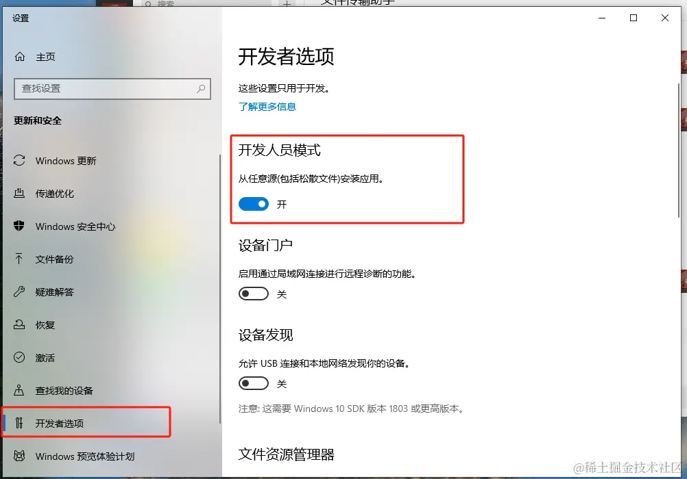

前端版本管理工具 - volta
HaoTian · 2024-09-01 15:21:24
只要在 package.json 配置以下代码即可轻松切换node版本而无需手动切换
{
"volta": { "node": "18.xx.x" }
}
特点
- 速度快：快速无缝地安装和运行任何 JS 工具，按项目版本切换
- 跨平台：包括
Windows和macOS linux - 多管理器：
（npm、yarm、pnpm、cnpm）
volta 安装
- 在包括 macOS 在内的大多数 linux 系统上，只需一个命令即可安装 Volta：
curl https://get.volta.sh | bash
对于 bash、zsh 和 fish，此安装程序将自动更新控制台启动脚本。如果希望防止修改控制台启动脚本，请参阅跳过 Volta 安装程序。要手动将 shell 配置为使用 Volta，请编辑控制台启动脚本以：
- 将
VOLTA_HOME变量设置为$HOME/.VOLTA - 将
$VOLTA_HOME/bin添加到PATH变量的开头
Windows 安装
- 对于 Windows，点击下载 volta， 然后按照说明进行操作。
Volta 的功能取决于创建符号链接，因此您必须： - 启用 开发人员模式（推荐）

下载过后打开安装包，一直点next即可完成安装
我们打开cmd或者powershell执行
# 默认安装最新的 LTS 稳定版可通过 @xxx 的方式安装对应版本
volta install node
下载完成后放到 C:\\Users\\pc\\AppData\\Local\\Volta\\tools\\inventory\\node 目录中（通过 uninstall 删除不了已下载的 node 版本及包管理工具，如果需要删除请直接删除上述路径下要删除的东西，或者整个包删除，重新下载）
安装完成后每个 node 版本中都有对应的 npm，你也可以安装 yarn 和 pnpm
# yarn版本推荐1.22.22 最新版本yarn 使用过程中有问题（具体还在探索中）
volta install yarn@x.xx.xx
# 安装pnpm推荐node版本18及以上 低版本会报版本不兼容
volta install pnpm
管理项目的 node 版本(在项目根目录中安装依赖前先在终端执行再安装项目依赖)
volta pin node@xx.xx.xx
# 程序包管理器 cnpm yarn pnpm 等
volta pin npm@xx.xx.xx
Volta 会把这个放在你的 package.json，这样你就可以把你选择的工具提交到版本控制:
查看当前已安装 node 版本及包管理工具
volta list
其他相关指令
volta fetch # 将工具缓存到本地机器以供离线使用
volta install # 设置工具的默认版本
volta uninstall # 从工具链中卸载工具
volta pin # 固定项目的运行时或包管理器
volta list # 显示当前工具链
volta list all # 显示所有工具链
volta completions # 命令补全
volta which # 查看 volta 安装的工具的目录
volta setup # 为当前用户/shell 启用 volta
volta run # 运行带有自定义Node、npm、pnpm和/或Yarn版本的命令
volta help # 输出帮助信息